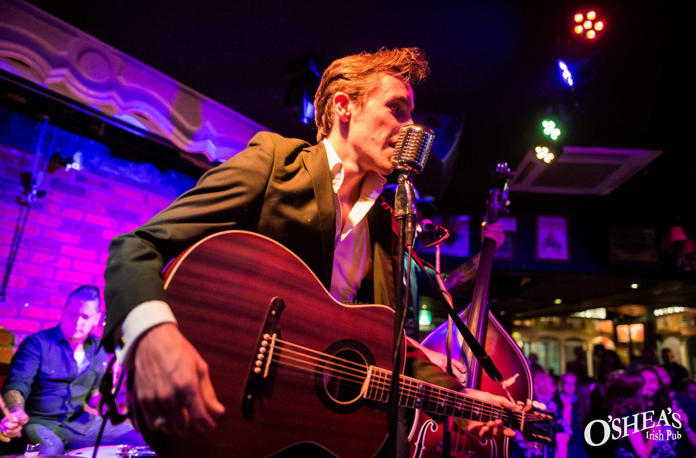
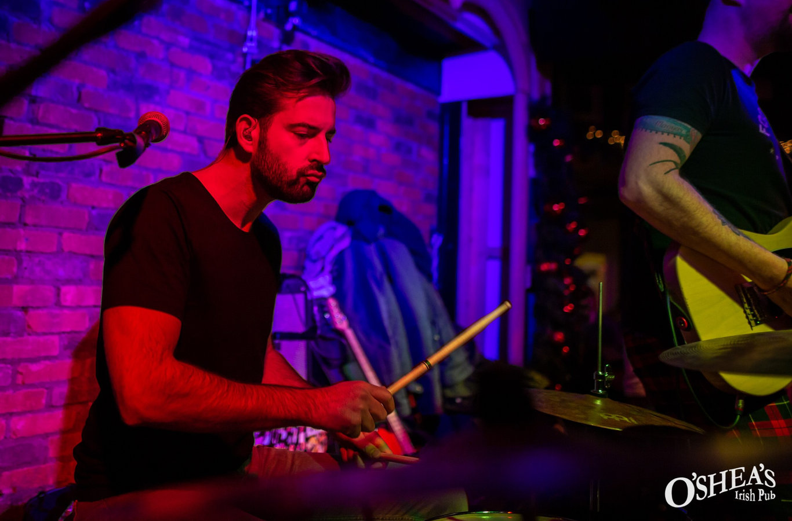

Live sport op 12 schermen
Grote wedstrijden kijk je bij O'Sheas samen, met een vers getapt glas erbij. Met 12 schermen zit je overal goed.
Welke wedstrijden we deze week uitzenden? Bel of mail ons gerust, dan horen we het je graag.

Irish pub in hartje Eindhoven, sinds 1995
Sport op 12 schermen, livemuziek in het weekend, ruim 20 bieren van de tap en meer dan 200 whisky's, gins en meer. En stevige pubfood erbij.
Elke dag open, in het weekend tot 04:00
12schermen voor live sport
20+bieren van de tap
200+whisky's, gins en meer
04:00open op vrijdag en zaterdag
Midden in Eindhoven staat O'Sheas: een van de eerste, grootste, levendigste en bekendste traditionele Irish pubs van Nederland.
Al ruim 25 jaar brengt O'Sheas een stukje echt Ierland naar Eindhoven, met traditionele Ierse pubfood, drankjes en livemuziek. Met meer dan 20 tapbieren, speciale craft beer-kaarten en een grote selectie van meer dan 200 whisky's, gins en meer is er voor iedereen iets.
O'Sheas is dé plek om oude vrienden te zien of nieuwe te maken. Zin in een geweldige avond uit? Bij O'Sheas gebeurt het.

Grote wedstrijden kijk je bij O'Sheas samen, met een vers getapt glas erbij. Met 12 schermen zit je overal goed.
Welke wedstrijden we deze week uitzenden? Bel of mail ons gerust, dan horen we het je graag.

Ons podium rockt elk weekend: van duelling pianos tot live bands, van rock tot de nieuwste hits uit de hitlijsten.
Wie er dit weekend speelt, vertellen we je graag via telefoon of mail.
Ons eigen bier, gebrouwen door O'Sheas Eindhoven.
Voor elk glas Murphy's Law dat je drinkt, doneren we 1 euro aan een lokaal goed doel. Zo steunen we onze buurt, slok voor slok.
"Everybody believes in something, I believe I'll have another one."
Murphy's Law
Stevige pubfood: fish & chips, burgers van Angus-rund, hotdogs, nachos om te delen en in het weekend een echte Irish fry-up. Bestellen doe je via de QR-code op je tafel of aan de bar.
= vegetarisch (of vega te bestellen). Prijzen in euro's.
Allergieën? In onze keuken gebruiken we zuivel, ei, noten, pinda's, schaaldieren, soja en tarwe. Producten van onze leveranciers kunnen deze en andere allergenen bevatten of ermee in aanraking komen. Alles wordt in gedeelde ruimtes bereid. Vraag het gerust aan een van onze medewerkers. Food menu (pdf)
Ierse en Engelse klassiekers van de tap, craft beer van over de hele wereld, ons eigen Murphy's Law, speciale gin-tonics en een whiskykast waar je even voor moet gaan zitten.
Prijzen in euro's. Drinks menu (pdf)
| Maandag | 16:00 - 02:00 |
|---|---|
| Dinsdag | 16:00 - 02:00 |
| Woensdag | 16:00 - 02:00 |
| Donderdag | 16:00 - 02:00 |
| Vrijdag | 13:00 - 04:00 |
| Zaterdag | 12:00 - 04:00 |
| Zondag | 12:00 - 00:00 |
O'Sheas Irish Pub
Jan van Lieshoutstraat 9
5611 EE Eindhoven
040 246 62 13
info@osheaseindhoven.com
Een vraag, of benieuwd wat er deze week op de schermen of het podium staat? Bel of mail ons.